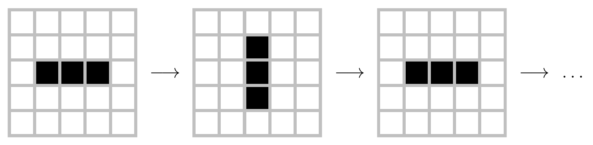
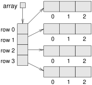
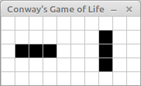
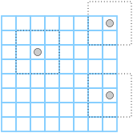
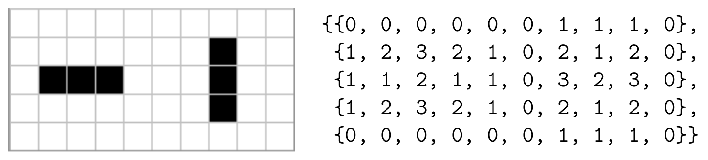

15 Arrays of Arrays
The last three chapters of this book use 2D graphics to illustrate more advanced object-oriented concepts. If you haven’t yet read Appendix 20, you might want to read it now and become familiar with the Canvas, Color, and Graphics classes from the java.awt package. In this chapter, we use these classes to draw images and animations, and to run graphical simulations.
15.1 Conway’s Game of Life
The Game of Life, or GoL for short, was developed by John Conway and popularized in 1970 in Martin Gardner’s column in Scientific American. Conway calls it a “zero-player game” because no players are needed to choose strategies or make decisions. After you set up the initial conditions, you watch the game play itself. That turns out to be more interesting than it sounds; you can read about it at https://en.wikipedia.org/wiki/Conway's_Game_of_Life.
The game board is a 2D grid of square cells. Each cell is either “alive” or “dead”; the color of the cell indicates its state. Figure 15.1 shows an example grid configuration; the five black cells are alive.
The game proceeds in time steps, during which each cell interacts with its neighbors in the eight adjacent cells. At each time step, the following rules are applied:
A live cell with fewer than two live neighbors dies, as if by underpopulation.
A live cell with more than three live neighbors dies, as if by overpopulation.
A dead cell with exactly three live neighbors becomes a live cell, as if by reproduction.
Notice some consequences of these rules. If you start with a single live cell, it dies. If all cells are dead, no cells come to life. But if you have four cells in a square, they keep each other alive, so that’s a “stable” configuration.
Another initial configuration is shown in Figure 15.2. If you start with three horizontal cells, the center cell lives, the left and right cells die, and the top and bottom cells come to life. The result after the first time step is three vertical cells.
During the next time step, the center cell lives, the top and bottom cells die, and the left and right cells come to life. The result is three horizontal cells, so we’re back where we started, and the cycle repeats forever.

Patterns like this are called “periodic”, because they repeat after a period of two or more time steps. But they are also considered stable, because the total number of live cells doesn’t grow over time.
Most simple starting configurations either die out quickly or reach a stable configuration. But there are a few starting conditions that display remarkable complexity. One of those is the R-pentomino (https://www.conwaylife.com/wiki/R-pentomino), which starts with only five cells, runs for 1,103 time steps, and ends in a stable configuration with 116 live cells.
In the following sections, we’ll implement the Game of Life in Java. We’ll first implement the cells, then the grid of cells, and finally the game itself.
15.2 The Cell Class
When drawing a cell, we’ll need to know its location on the screen and size in pixels. To represent the location, we use the x and y coordinates of the upper-left corner. And to represent the size, we use an integer, size.
To represent the state of a cell, we use an integer, state, which is 0 for dead cells and 1 for live cells. We could use a boolean instead, but it’s good practice to design classes to be reusable (e.g., for other games that have more states).
Here is a Cell class that declares these instance variables:
public class Cell {
private final int x;
private final int y;
private final int size;
private int state;
}Notice that x, y, and size are constants. Once the cell is created, we don’t want it to move or change size. But state can and should change, so it is not a constant.
The next step is to write a constructor. Here’s one that takes x, y, and size as parameters, and sets state to a default value:
public Cell(int x, int y, int size) {
this.x = x;
this.y = y;
this.size = size;
this.state = 0;
}The following method draws a cell. Like the paint method in Appendix 20, it takes a graphics context as a parameter:
public static final Color[] COLORS = {Color.WHITE, Color.BLACK};
public void draw(Graphics g) {
g.setColor(COLORS[state]);
g.fillRect(x + 1, y + 1, size - 1, size - 1);
g.setColor(Color.LIGHT_GRAY);
g.drawRect(x, y, size, size);
}The draw method uses the state of the cell to select a color from an array of Color objects. Then it uses to fillRect to draw the center of the cell and drawRect to draw a light-gray border.
We also need methods to get and set the cell’s state. We could just provide getState and setState, but the code will be more readable if we provide methods customized for the Game of Life:
public boolean isOff() {
return state == 0;
}
public boolean isOn() {
return state == 1;
}
public void turnOff() {
state = 0;
}
public void turnOn() {
state = 1;
}15.3 Two-Dimensional Arrays
To represent a grid of cells, we can use a multidimensional array. To create a 2D array, we specify the number of rows and columns:
int rows = 4;
int cols = 3;
Cell[][] array = new Cell[rows][cols];The result is an array with four rows and three columns. Initially, the elements of the array are null. We can fill the array with Cell objects like this:
for (int r = 0; r < rows; r++) {
int y = r * size;
for (int c = 0; c < cols; c++) {
int x = c * size;
array[r][c] = new Cell(x, y, size);
}
}The loop variables r and c are the row and column indexes of the cells. The variables x and y are the coordinates, respectively. For example, if size is 10 pixels, the cell at index (1, 2) would be at coordinates (10, 20) on the screen.
In Java, a 2D array is really an array of arrays. You can think of it as an array of rows, where each row is an array. Figure 15.3 shows what it looks like.

When we write array[r][c], Java uses the first index to select a row and the second index to select an element from the row. This way of representing 2D data is known as row-major order.
15.4 The GridCanvas Class
Now that we have a Cell class and a way to represent a 2D array of cells, we can write a class to represent a grid of cells. We encapsulate the code from the previous section and generalize it to construct a grid with any number of rows and columns:
public class GridCanvas extends Canvas {
private Cell[][] array;
public GridCanvas(int rows, int cols, int size) {
array = new Cell[rows][cols];
for (int r = 0; r < rows; r++) {
int y = r * size;
for (int c = 0; c < cols; c++) {
int x = c * size;
array[r][c] = new Cell(x, y, size);
}
}
// set the canvas size
setSize(cols * size, rows * size);
}
}Using vocabulary from the previous chapter, GridCanvas “is a” Canvas that “has a” 2D array of cells. By extending the Canvas class from java.awt, we inherit methods for drawing graphics on the screen.
In fact, the code is surprisingly straightforward: to draw the grid, we simply draw each cell. We use nested for loops to traverse the 2D array:
public void draw(Graphics g) {
for (Cell[] row : array) {
for (Cell cell : row) {
cell.draw(g);
}
}
}The outer loop traverses the rows; the inner loop traverses the cells in each row. You can almost read this method in English: “For each row in the array, and for each cell in the row, draw the cell in the graphics context.” Each cell contains its coordinates and size, so it knows how to draw itself.
Classes that extend Canvas are supposed to provide a method called paint that “paints” the contents of the Canvas. It gets invoked when the Canvas is created and anytime it needs to be redrawn; for example, when its window is moved or resized.
Here’s the paint method for GridCanvas. When the window management system calls paint, paint calls draw, which draws the cells:
public void paint(Graphics g) {
draw(g);
}15.5 Other Grid Methods
In addition to draw and paint, the GridCanvas class provides methods for working with the grid itself. numRows and numCols return the number of rows and columns. We can get this information from the 2D array, using length:
public int numRows() {
return array.length;
}
public int numCols() {
return array[0].length;
}Because we are using row-major order, the 2D array is an array of rows. numRows simply returns the length of the rows array. numCols returns the length of the first row, which is the number of columns. Since the rows all have the same length, we have to check only one.
GridCanvas also provides a method that gets the Cell at a given location, and for convenience when starting the game, a method that turns on the Cell at a given location.
public Cell getCell(int r, int c) {
return array[r][c];
}
public void turnOn(int r, int c) {
array[r][c].turnOn();
}15.6 Starting the Game
Now we’re ready to implement the game. To encapsulate the rules of GoL, we define a class named Conway. The Conway class “has a” GridCanvas that represents the state of the game.
This constructor makes a GridCanvas with 5 rows and 10 columns, with cells that are 20 pixels wide and high. It then sets up the initial conditions:
public class Conway {
private GridCanvas grid;
public Conway() {
grid = new GridCanvas(5, 10, 20);
grid.turnOn(2, 1);
grid.turnOn(2, 2);
grid.turnOn(2, 3);
grid.turnOn(1, 7);
grid.turnOn(2, 7);
grid.turnOn(3, 7);
}
}Before we implement the rest of the game, we’ll write a main method that creates a Conway object and displays it. We can use this method to test Cell and GridCanvas, and to develop the other methods we need:
public static void main(String[] args) {
String title = "Conway's Game of Life";
Conway game = new Conway();
JFrame frame = new JFrame(title);
frame.setDefaultCloseOperation(JFrame.EXIT_ON_CLOSE);
frame.setResizable(false);
frame.add(game.grid);
frame.pack();
frame.setVisible(true);
game.mainloop();
}After constructing the game object, main constructs a JFrame, which creates a window on the screen. The JFrame is configured to exit the program when closed. Resizing the window is disabled.
main then adds the GridCanvas inside the frame, resizes (“packs”) the frame to fit the canvas, and makes the frame visible. Figure 15.4 shows the result.

Conway application.
15.7 The Simulation Loop
At the end of main, we call mainloop, which uses a while loop to simulate the time steps of the Game of Life. Here’s a rough draft of this method:
private void mainloop() {
while (true) {
this.update();
grid.repaint();
Thread.sleep(500); // compiler error
}
}During each time step, we update the state of the game and repaint the grid. We will present the update method in Section 15.10.
repaint comes from the Canvas class. By default, it calls the paint method we provided, which calls draw. The reason we use it here is that repaint does not require a Graphics object as a parameter.
Thread.sleep(500) causes the program to “sleep” for 500 milliseconds, or a half second. Otherwise, the program would run so fast we would not be able to see the animation.
There’s just one problem: compiling this code results in the error “unreported exception InterruptedException”. This message means we need to do some exception handling.
15.8 Exception Handling
So far, the only exceptions you have seen are run-time errors like “array index out of bounds” and “null pointer”. When one of these exceptions occurs, Java displays a message and ends the program.
If you don’t want the program to end, you can handle exceptions with a try-catch statement. The syntax is similar to an if-else statement, and the logic is, too. Here’s what it looks like:
try {
Thread.sleep(500);
} catch (InterruptedException e) {
// do nothing
}First, Java runs the code in the try block, which calls Thread.sleep in this example. If an InterruptedException occurs during the try block, Java executes the catch block. In this example, the catch block contains a comment, so it doesn’t do anything.
If a different exception occurs during the try block, Java does whatever it would do otherwise, which is probably to display a message and end the program. If no exceptions occur during the try block, the catch block doesn’t run and the program continues.
In this example, the effect of the try-catch statement is to ignore an “interrupted” exception if it occurs. As an alternative, we could use the catch block to display a customized message, end the program, or handle the exception in whatever way is appropriate. For example, if user input causes an exception, we could catch the exception and prompt the user to try again later.
There’s more to learn about exception handling. You can read about exceptions in the Java tutorials (see https://thinkjava.org/exceptions).
15.9 Counting Neighbors
Now that you know about try and catch, we can use them to implement a useful method in GridCanvas. Part of the GoL logic is to count the number of live neighbors. Most cells have eight neighbors, as shown in Figure 15.5.
However, cells on the edges and in the corners have fewer neighbors. If we try to count all possible neighbors, we’ll go out of bounds. The following method uses a try-catch statement to deal with these special cases:
public int test(int r, int c) {
try {
if (array[r][c].isOn()) {
return 1;
}
} catch (ArrayIndexOutOfBoundsException e) {
// cell doesn't exist
}
return 0;
}
The test method takes a row index, r, and a column index, c. It tries to look up the Cell at that location. If both indexes are in bounds, the Cell exists. In that case, test returns 1 if the Cell is on. Otherwise, it skips the catch block and returns 0.
If either index is out of bounds, the array lookup throws an exception, but the catch block ignores it. Then test resumes and returns 0. So the non-existent cells around the perimeter are considered to be off.
Now we can use test to implement countAlive, which takes a grid location, (r, c), and returns the number of live neighbors surrounding that location:
private int countAlive(int r, int c) {
int count = 0;
count += grid.test(r - 1, c - 1);
count += grid.test(r - 1, c);
count += grid.test(r - 1, c + 1);
count += grid.test(r, c - 1);
count += grid.test(r, c + 1);
count += grid.test(r + 1, c - 1);
count += grid.test(r + 1, c);
count += grid.test(r + 1, c + 1);
return count;
}Because test handles “out of bounds” exceptions, countAlive works for any values of r and c.
15.10 Updating the Grid
Now we are ready to write update, which gets invoked each time through the simulation loop. It uses the GoL rules to compute the state of the grid after the next time step:
public void update() {
int[][] counts = countNeighbors();
updateGrid(counts);
}The rules of GoL specify that you have to update the cells “simultaneously”; that is, you have to count the neighbors for all cells before you can update any of them.
We do that by traversing the grid twice: first, countNeighbors counts the live neighbors for each cell and puts the results in an array named counts; second, updateGrid updates the cells. Here’s countNeighbors:
private int[][] countNeighbors() {
int rows = grid.numRows();
int cols = grid.numCols();
int[][] counts = new int[rows][cols];
for (int r = 0; r < rows; r++) {
for (int c = 0; c < cols; c++) {
counts[r][c] = countAlive(r, c);
}
}
return counts;
}countNeighbors traverses the cells in the grid and uses countAlive from the previous section to count the neighbors. The return value is a 2D array of integers with the same size as grid. Figure 15.6 illustrates an example.

countNeighbors for the grid in Section 15.6.
In contrast to the draw method of GridCanvas, which uses enhanced for loops, countNeighbors uses standard for loops. The reason is that, in this example, we need the indexes r and c to store the neighbor counts.
updateGrid uses getCell to select each Cell in the grid, and updateCell to do the update:
private void updateGrid(int[][] counts) {
int rows = grid.numRows();
int cols = grid.numCols();
for (int r = 0; r < rows; r++) {
for (int c = 0; c < cols; c++) {
Cell cell = grid.getCell(r, c);
updateCell(cell, counts[r][c]);
}
}
}updateCell implements the GoL rules: if the cell is alive, it dies if it has fewer than two or more than three neighbors; if the cell is dead, it comes to life if it has exactly three:
private static void updateCell(Cell cell, int count) {
if (cell.isOn()) {
if (count < 2 || count > 3) {
cell.turnOff();
}
} else {
if (count == 3) {
cell.turnOn();
}
}
}Notice that updateGrid and updateCell are both private, because they are helper methods not intended to be invoked from outside the class. updateCell is also static, because it does not depend on grid.
Now our implementation of the Game of Life is complete. We think it’s is pretty fun, and we hope you agree. But more importantly, this example is meant to demonstrate the use of 2D arrays and an object-oriented design that’s a little more substantial than in previous chapters.
15.11 Vocabulary
- multidimensional array:
-
An array with more than one dimension; a 2D array is an “array of arrays”.
- row-major order:
-
Storing data in a 2D array, first by rows and then by columns.
15.12 Exercises
The code for this chapter is in the ch15 directory of ThinkJavaCode2. See page for instructions on how to download the repository. Before you start the exercises, we recommend that you compile and run the examples.
Exercise 15.1. In GridCanvas, write a method named countOn that returns the total number of cells that are “on”. This method can be used, for example, to track the population in Game of Life over time.
Exercise 15.2. In our version of the Game of Life, the grid has a finite size. As a result, moving objects such as Gliders either crash into the wall or go out of bounds.
An interesting variation of the Game of Life is a “toroidal” grid, meaning that the cells “wrap around” on the edges. Modify the test method of GridCanvas so that the coordinates r and c map to the opposite side of the grid if they are too low or two high.
Run your code with a Glider (see Figure 15.1) to see if it works. You can initialize the Glider by modifying the constructor in the Conway class, or by reading it from a file (see the next exercise).
Exercise 15.3. The LifeWiki site (https://conwaylife.com/wiki/) has a fascinating collection of patterns for the Game of Life. These patterns are stored in a file format that is easy to read, in files with the suffix “.cells”.
For example, here is an 8 x 10 grid with a Glider near the upper-left corner:
!Name: Glider
..........
..O.......
...O......
.OOO......
..........
..........
..........
..........Lines that begin with ! are comments and should be ignored. The rest of the file describes the grid, row by row. A period represents a dead cell, and an uppercase O represents a live cell. See https://conwaylife.com/wiki/Plaintext for more examples.
Create a plain text file with the contents shown above, and save the file as glider.cells* in the same directory as your code.*
Define a constructor for the
Conwayclass that takes a string representing the name (or path) of a “.cells” file. Here is a starting point:public Conway(String path) { File file = new File(path); Scanner scan = new Scanner(file); }Modify the
mainmethod to invoke the constructor as follows:Conway game = new Conway("glider.cells");Handle the
FileNotFoundExceptionthat may be thrown when creating aScannerfor aFileby invokingprintStackTraceon the exception object and callingSystem.exit()with a status of1, indicating an error.Continue implementing the constructor by reading all non-comment lines into an
ArrayListviahasNextLineandnextLineof theScanner.Determine the number of rows and columns of the grid by examining the
ArrayListcontents.Create and initialize a
GridCanvasbased on theArrayList.
Once your constructor is working, you will be able to run many of the patterns on the LifeWiki. You might want to add a margin of empty cells around the initial pattern, to give it room to grow.
Exercise 15.4. Some files on the LifeWiki use “run-length encoding” (RLE) instead of plain text. The basic idea of RLE is to describe the number of dead and alive cells, rather than type out each individual cell.
For example, glider.cells* from the previous exercise could be represented this way with RLE:*
#C Name: Glider
x = 10, y = 8
$2bo$3bo$b3o!The first line specifies x (the number of columns) and y (the number of rows). Subsequent lines consist of the letters b (dead), o (alive), and $ (end of line), optionally preceded by a count. The pattern ends with !, after which any remaining file contents are ignored.
Lines beginning with # have special meaning and are not part of the pattern. For example, #C is a comment line. You can read more about RLE format on https://conwaylife.com/wiki/RLE.
Create a plain text file with the preceding contents, and save the file as glider.rle* in the same directory as your code.*
Modify your constructor from the previous exercise to check the last three characters of the
path. If they are"rle", then you will need to process the file as RLE. Otherwise, assume the file is in “.cells” format.In the end, your constructor should be able to read and initialize grids in both formats. Test your constructor by modifying the
mainmethod to read different files.